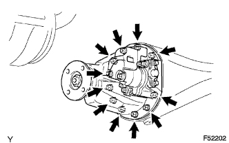
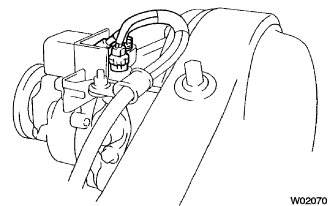

ЧАШКА ЗАДНЕГО ДИФФЕРЕНЦИАЛА В СБОРЕ (для моделей с блокировкой дифференциала) > СНЯТИЕ |
| 1. СНИМИТЕ ВАЛ ЛЕВОЙ ЗАДНЕЙ ПОЛУОСИ |
Снимите вал левой задней полуоси (Нажмите здесь).
| 2. СНИМИТЕ ВАЛ ПРАВОЙ ЗАДНЕЙ ПОЛУОСИ |
| 3. СНИМИТЕ КАРДАННЫЙ ВАЛ В СБОРЕ |
Снимите карданный вал в сборе (Нажмите здесь).
| 4. СНИМИТЕ ЧАШКУ ЗАДНЕГО ДИФФЕРЕНЦИАЛА В СБОРЕ |
|  |
Отверните 11 гаек и снимите 11 шайб и чашку дифференциала.
Отсоедините шланг сапуна привода блокировки заднего дифференциала от привода дифференциала в сборе.
|  |
Отсоедините разъем привода блокировки дифференциала.
| 5. СНИМИТЕ ПРОКЛАДКУ ЧАШКИ ЗАДНЕГО ДИФФЕРЕНЦИАЛА |